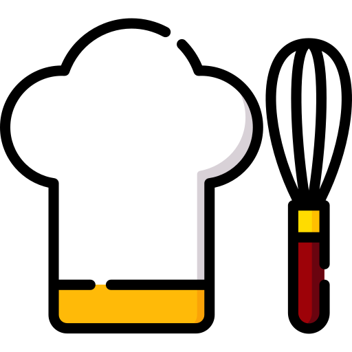

{{ getUser().username }}
FEED
FRIENDS
FOLLOWERS
FOLLOWED
LOGOUT
Most Used Ingredients
{{ingredient.value}}
Most Used Ingredients
Average total calories consumed
Suggestion based on friends
Most followed users
{{ item.recipeName }}
No Posts Found